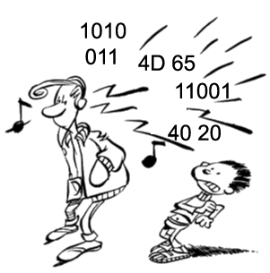
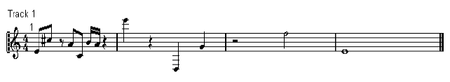

Représentation de l'information Laboratoire II
Andres Perez-Uribe et Guillaume Boutillier
La musique, les sons.
Voici quelques différents formats pour stocker des données audio.
 1. Les fichiers WAVE
Le format WAVE (waveform) a été développé par IBM et Microsoft. C'est un des formats de base non compressé des données audio.
2. Les fichiers MP3
MP3 "MPEG Audio Layer 3 compression" est un format de compression de données audio développé par l'Organisation de standardisation internationale (ISO). Ce format audio permet de compresser environ 12 fois les documents audio conventionnels (WAV) ou les CDROM de musique habituels. Cette compression n'altère pas significativement le son du MP3 (aucune différence n'est perceptible sans comparaison fine).
L'algorithme général de compression des informations audio est basé sur les propriétés psychoacoustiques de l'appareil auditif humain. Une partie de codeur a pour tâche de déterminer les informations qu'il n'est pas utile de coder à partir de ces propriétés psychoacoustiques. Une autre partie du codeur peut alors compresser les informations d'entrées à partir des informations données par le modèle psychoacoustique.
3. Les fichiers MIDI
Le midi est une norme permettant de coder la musique produite en temps réel par un synthétiseur. C'est à dire qu'en même temps que vous jouez, ce que vous faites est transcrit dans le langage midi, compréhensible par toutes les machines supportant cette norme (ordinateur, ou autres appareils midi). Le midi est capable d'interpréter beaucoup de paramètres, comme le changement d'instrument, le volume, l'attaque, la durée des notes, ... ainsi que les paramètres de son en temps réel (cut off, résonnance...).
Traduction d'une partition :
 Voici le fichier MIDI qui code cette partition. Ce fichier est un fichier binaire, il peut être joué par RealPlayer, QuickTime ou d'autres logiciels. Voici son contenu en hexadécimal, MIDI
Pour simplifier, nous dirons que chaque chiffre en hexa traduit un des paramètres de la partition, la note (do, ré, mi, ...), la durée, le volume, etc. En modifiant ces valeurs, nous pouvons changer la mélodie de cette partition.
Dans ce document vous allez trouver des explications sur la signification de chaque byte du fichier MIDI.
1. Exercice
Pourriez-vous modifier le fichier midi pour y coder les premières 11 notes de Frère Jacques ?
DO - RE - MI - DO / DO - RE - MI - DO / MI - FA - SOLVous pouvez lire le fichier final avec le bouton "Choose file", et le jouer avec le bouton "Play".
Sélectionnez un fichier à jouer :
HEIG-VD, 2010